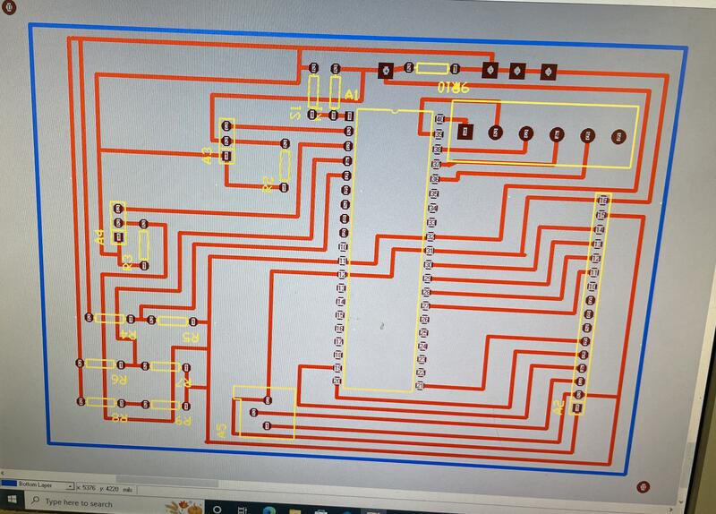

Firebot – Autonomous Firefighter Robot
I single handedly designed and built an autonomous firefighter robot capable of navigating a maze, avoiding obstacles, and extinguishing fires using a fan. This project involved both circuit design and hardware integration, reinforcing my skills in embedded systems and robotics.
I first breadboarded the robot’s core components before designing the custom circuit board using TraxMaker. The circuit was then transferred onto a PCB, etched, drilled, and soldered to integrate motors, infrared sensors, a camera, and an LCD display. I also constructed the firefighter base, connecting three separate circuit boards and integrating the motors for mobility.
The final robot successfully detected obstacles using the camera, identified fire sources through its infrared sensors, followed pathways with an additional infrared sensor for line detection, and autonomously navigated its environment to put out fires. This project deepened my expertise in PCB design, circuit assembly, and autonomous robotics.
← Back to Projects